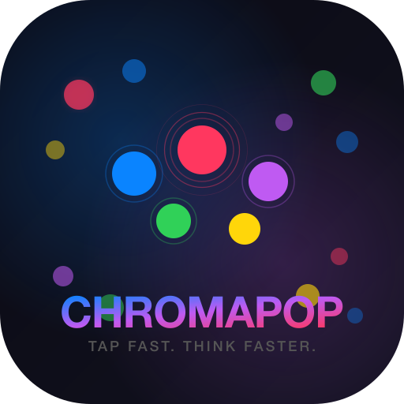

ChromaPop privacy policy
Effective October 21, 2026
ChromaPop is an Android app by Kevin Fitzgerald for Fire tablets. It does not collect your data. There are no ads, no analytics, no accounts and no server of ours. The app has no permission to use the internet at all.
What it keeps on your device
- Your best scores, daily streak and game count
- Your reaction-time stats (speed by level, accuracy by color, last 30 days)
- Your settings (sound, Colorblind Mode, palette, dot theme)
This stays in the app's private storage on your device. Uninstalling the app deletes it. If you turn on your device's own backup, Android may include it in that backup, which is covered by your device maker's privacy policy.
Permissions
- VIBRATE: Light tap feedback on tablets that have a vibration motor (Capacitor Haptics). Granted at install, no prompt; no data is involved.
Links that leave the app
None. ChromaPop doesn't open web pages, store pages or email from inside the app.
Purchases
ChromaPop is a one-time purchase in the Amazon Appstore, with no in-app purchases or subscriptions. Amazon's privacy notice covers that purchase.
Sharing and selling
Nothing is collected, so nothing is sold or shared.
Children
ChromaPop isn't directed at children under 13 and collects nothing from anyone.
Changes
If this policy changes, this page will show the new date.